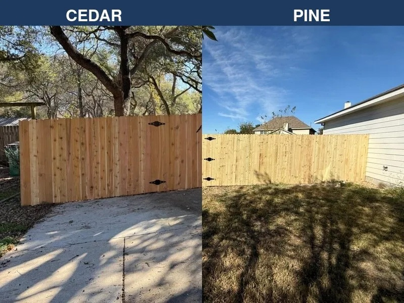

Cedar vs. Pine Fence for Austin
Which wood is king in Central Texas? A deep dive into cost, durability, and aesthetics.
Read More →Your complete guide to fences and decks in Central Texas. Find expert advice on installation, maintenance, HOAs, and materials.

Featured Guide
Can't decide between the classic beauty of wood and the modern strength of metal? We break down the pros, cons, costs, and maintenance for each so you can make the best choice for your Austin home.
Read the Full Guide →Which wood is king in Central Texas? A deep dive into cost, durability, and aesthetics.
Read More →It's not just for warehouses. Explore modern, stylish, and affordable chain link options.
Read More →From board-on-board to horizontal slats, find the perfect privacy fence style for your home.
Read More →A complete guide to protecting your fence from the harsh Texas sun, humidity, and storms.
Read More →A step-by-step guide to staining your fence for maximum protection and beauty.
Read More →Learn how to assess fence damage and make the most cost-effective decision.
Read More →Do you need a permit for your fence in Austin? Get a clear, simple answer here.
Read More →Tips and tricks for a smooth, fast approval process with your Homeowners Association.
Read More →What to do after a storm hits. A guide to emergency repairs and insurance claims.
Read More →Explore ornamental iron, aluminum, and modern steel fence options for your property.
Read More →Keep your furry friends safe and secure. A look at the best pet-friendly fencing solutions.
Read More →Our team is ready to help. Contact us for a free consultation and estimate for your fence or deck project.
Get Your Free Estimate